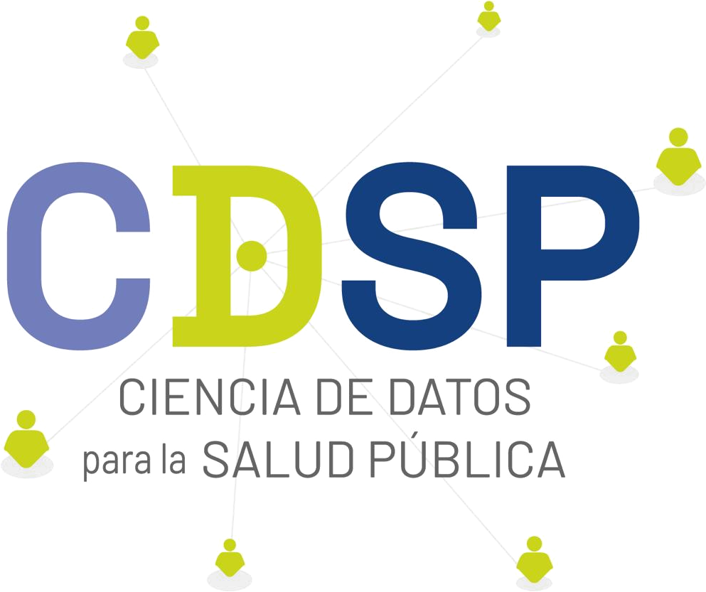

Language / Idioma: English | Español
Data Science for Public Health Group | University of Chile


Official Chilean ICD-10 Classification (CIE-10) for R.
Specialized package for searching, validating, and analyzing ICD-10 codes in the Chilean context. Includes the official MINSAL/DEIS v2018 catalogue with optimized search, comorbidity computation, and WHO ICD-11 API access.
Purpose
ciecl facilitates working with ICD-10 codes in Chilean health research and data analysis, avoiding manual Excel manipulation. Chilean clinical records often contain codes with formatting inconsistencies (spaces, capitalization, missing dots); the package automates the correction of these inconsistencies in a vectorized and efficient manner, validates codes against the official catalogue, and enables the computation of comorbidity indices (Charlson, Elixhauser) directly from the diagnoses. It is aimed at epidemiologists, biostatisticians and data scientists working with Chilean clinical records.
Main features:
- Official Chilean CIE-10 catalogue (MINSAL/DEIS v2018) embedded as a dataset
-
Vectorized validation and normalization: accepts
E110,E11.0,e 11 0,I10-0, etc. - Jaro-Winkler fuzzy search tolerant to typos
- Chilean medical abbreviations (IAM, EPOC, DM2, HTA, TBC, …)
-
Charlson/Elixhauser comorbidity computation using
comorbidity - Direct SQL queries over the complete catalogue via SQLite + FTS5
-
Hierarchical expansion of categories (e.g.,
E11→E11.0,E11.1, …,E11.9) -
WHO ICD-11 API via
cie11_search()
The dataset is established by Decree 356/2017 of Chile’s Ministry of Health as the official disease classification. It is not modifiable by the package; it can only be updated by MINSAL institutional decree.
Installation
# CRAN
install.packages("ciecl")
# GitHub (desarrollo)
# install.packages("pak")
pak::pak("RodoTasso/ciecl")Quick start
library(ciecl)
# Exact code lookup
cie_lookup("E11.0")
#> # A tibble: 1 × 11
#> codigo descripcion categoria seccion capitulo_nombre inclusion exclusion
#> <chr> <chr> <chr> <chr> <chr> <chr> <chr>
#> 1 E11.0 Diabetes mellitu… E11 DIAB… E08-E1… Cap.04 ENFERM… <NA> <NA>
#> # ℹ 4 more variables: capitulo <chr>, es_daga <int>, es_cruz <int>,
#> # uso_cl <chr>
# Multiple codes
cie_lookup(c("E11.0", "I10", "Z00"))
#> # A tibble: 3 × 11
#> codigo descripcion categoria seccion capitulo_nombre inclusion exclusion
#> <chr> <chr> <chr> <chr> <chr> <chr> <chr>
#> 1 E11.0 Diabetes mellitu… E11 DIAB… E08-E1… Cap.04 ENFERM… <NA> <NA>
#> 2 I10 Hipertensión ese… I10 HIPE… I10-I1… Cap.09 ENFERM… <NA> <NA>
#> 3 Z00 Examen general e… Z00 EXAM… Z00-Z1… Cap.21 FACTOR… <NA> <NA>
#> # ℹ 4 more variables: capitulo <chr>, es_daga <int>, es_cruz <int>,
#> # uso_cl <chr>
# Direct (vectorized) description for use in mutate()
cie_describe(c("E11.0", "I10"))
#> [1] "Diabetes mellitus tipo 2 con coma" "Hipertensión esencial (primaria)"
# Example in a dplyr pipeline
# egresos |> dplyr::mutate(desc = cie_describe(codigo))
# Typo-tolerant fuzzy search
cie_search("diabetis mellitus")
#> # A tibble: 50 × 4
#> codigo descripcion score categoria
#> <chr> <chr> <dbl> <chr>
#> 1 E10 Diabetes mellitus insulinodependiente 0.5 E10 DIAB…
#> 2 E10.0 Diabetes mellitus tipo 1 con coma 0.5 E10 DIAB…
#> 3 E10.1 Diabetes mellitus tipo 1 con cetoacidosis 0.5 E10 DIAB…
#> 4 E10.2 Diabetes mellitus tipo 1 con complicaciones renales 0.5 E10 DIAB…
#> 5 E10.3 Diabetes mellitus tipo 1 con complicaciones oftálmicas 0.5 E10 DIAB…
#> 6 E10.4 Diabetes mellitus tipo 1 con complicaciones neurológi… 0.5 E10 DIAB…
#> 7 E10.5 Diabetes mellitus tipo 1 con complicaciones circulat… 0.5 E10 DIAB…
#> 8 E10.6 Diabetes mellitus tipo 1 con otras complicaciones esp… 0.5 E10 DIAB…
#> 9 E10.7 Diabetes mellitus tipo 1 con complicaciones múltiples 0.5 E10 DIAB…
#> 10 E10.8 Diabetes mellitus tipo 1 con complicaciones no especi… 0.5 E10 DIAB…
#> # ℹ 40 more rows
# Chilean medical abbreviations
cie_search("IAM")
#> ℹ Sigla detectada: "IAM" -> "infarto agudo miocardio"
#> # A tibble: 50 × 4
#> codigo descripcion score categoria
#> <chr> <chr> <dbl> <chr>
#> 1 I21 Infarto agudo del miocardio 1 I21 INFA…
#> 2 I21.0 Infarto transmural agudo del miocardio de la pared an… 1 I21 INFA…
#> 3 I21.1 Infarto transmural agudo del miocardio de la pared in… 1 I21 INFA…
#> 4 I21.2 Infarto agudo transmural del miocardio de otros sitios 1 I21 INFA…
#> 5 I21.3 Infarto transmural agudo del miocardio, de sitio no e… 1 I21 INFA…
#> 6 I21.4 Infarto subendocárdico agudo del miocardio 1 I21 INFA…
#> 7 I21.9 Infarto agudo del miocardio, sin otra especificación 1 I21 INFA…
#> 8 I23 Ciertas complicaciones presentes posteriores al infar… 1 I23 CIER…
#> 9 I23.0 Hemopericardio como complicación presente posterior a… 1 I23 CIER…
#> 10 I23.3 Ruptura de la pared cardíaca sin hemopericardio como … 1 I23 CIER…
#> # ℹ 40 more rows
# Comorbilidades (requiere: install.packages("comorbidity"))
df |> cie_comorbid(id = "paciente", code = "diagnostico", map = "charlson")ICD-11 API (optional)
To use cie11_search() you need free WHO credentials (https://icd.who.int/icdapi). We recommend storing them with the keyring package:
keyring::key_set("ciecl_icd11") # client_id:client_secret
Sys.setenv(ICD_API_KEY = keyring::key_get("ciecl_icd11"))
cie11_search("diabetes mellitus")The CIE-10 functions (the core of the package) work without an API key.
Data
Official CIE-10 MINSAL/DEIS v2018 catalogue:
- Source: DEIS — Centro FIC Chile
- Public domain under Decree 356/2017
Development
This package was developed with assistance from Claude (Anthropic), with human verification and validation of all code and documentation.
Contributing
- Report bugs: https://github.com/RodoTasso/ciecl/issues
- Contribute: see CONTRIBUTING.md
Author
Rodolfo Tasso Suazo — rtasso@uchile.cl Data Science for Public Health Group, School of Public Health, Faculty of Medicine, University of Chile.
Acknowledgements
- Package logo design: @fje1.
Links
- Repository: https://github.com/RodoTasso/ciecl
- DEIS MINSAL: https://deis.minsal.cl
- ICD-11 API: https://icd.who.int/icdapi

Data Science for Public Health Group
School of Public Health, Faculty of Medicine
University of Chile